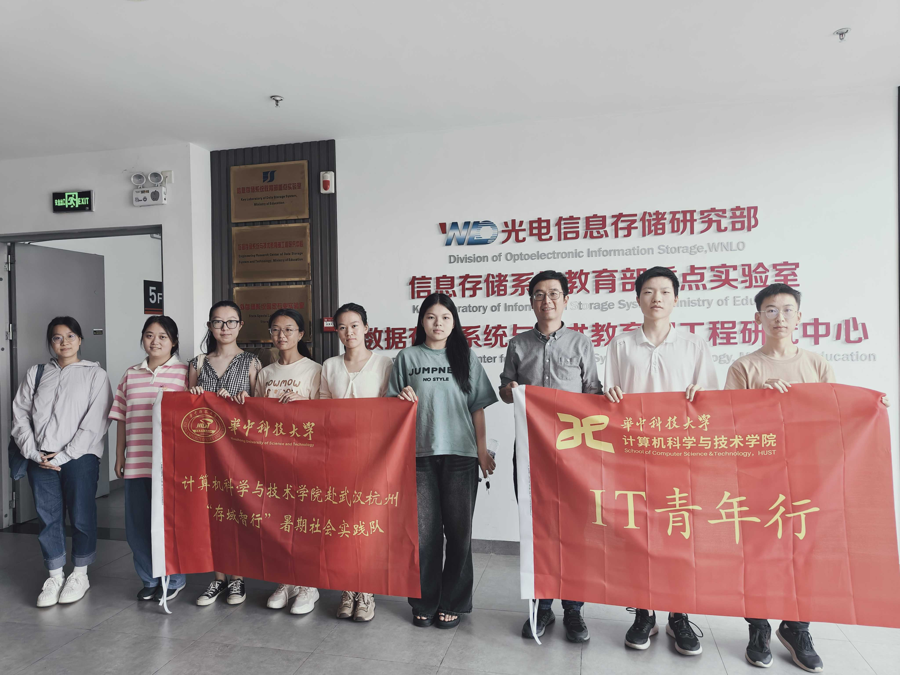
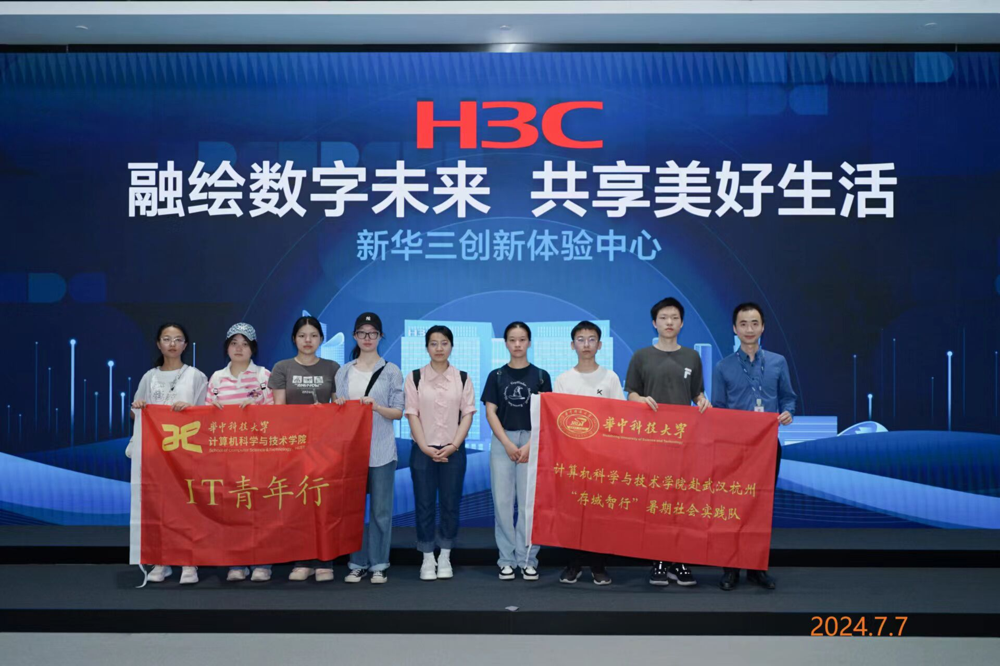
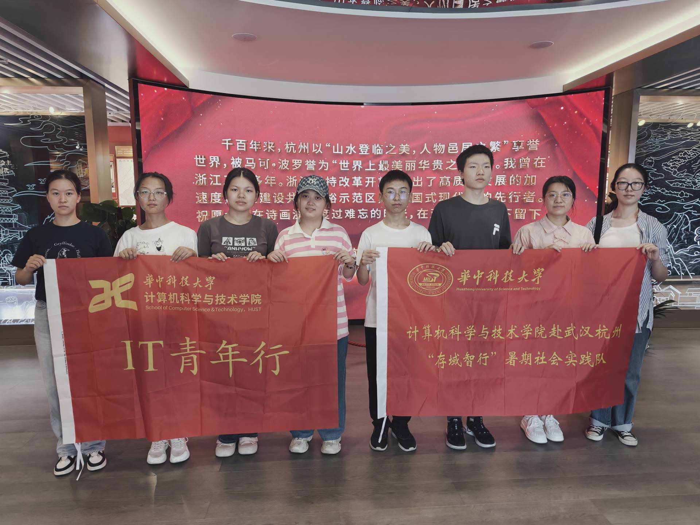

我们的社会实践
在习近平新时代中国特色社会主义思想的引领下，追寻习主席企业走访的脚步，探寻中国科技的先行示范地、典型代表地、生动实践地， 通过走访了解目前存储领域的前沿技术，深入企业实地探究先进存储技术投入生产和应用的现状、未来的发展前景以及趋势，知晓市场需求。 本次活动中，我们将走进武汉达梦数据库股份有限公司、武汉海康威视科技有限公司、杭州新华三技术有限公司， 切身感受灵感从萌发孵化到逐步完善成型，再到转化成成熟可靠的关键技术，最终落实形成产品的全过程。其中，习近平主席曾多次走访武汉、 杭州两地的高科技公司，对其科技创新寄予厚望。我们希望通过与行业大拿、相关领军人物沟通交流，学习前辈刻苦专研、迎难而上的宝贵品质。 体验知名公司的企业文化，为大学生日后步入职场、面临就业问题做好准备，为大学生日后为中国特色社会主义事业的建设做出贡献创造先决条件

图为采访学校教授时的合影
图为走访H3C企业时的合影
图为参观杭州党史博物馆的合影